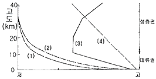
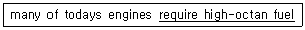
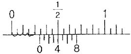
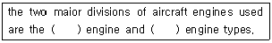

항공기관정비기능사 (2012-02-12 기출문제)
1과목: 비행원리
1. 균일한 속도로 빠르게 흐르는 공기의 흐름속에 평판의 앞전으로부터 생기는 경계층의 종류를 순서대로 옳게 배열한 것은?
- 층류 경계층 → 난류 경계층 → 천이 구역
- 난류 경계층 → 천이 구역 → 층류 경계층
- 층류 경계층 → 천이 구역 → 난류 경계층
- 천이 구역 → 층류 경계층 → 난류 경계층
(정답률: 77%)

2. 조종면의 뒷전 부분에 부착하는 작은 플랩의 일종으로 조종면 뒷전 부분의 압력 분포를 변화시키는 역할을 함으로서 힌지 모멘트에 변화를 생기게 하는 장치는?
- 탭(Tab)
- 윙렛(Winglet)
- 혼 밸런스(Horn balance)
- 앞전 밸런스(Leading edge balance)
(정답률: 77%)
3. 비행기가 비행 중 돌풍이나 조종에 의해 평형상태를 벗어난 뒤에 다시 평형상태로 돌아오려는 초기의 경향을 무엇이라 하는가?
- 정적불안정
- 정적안정
- 정적중립
- 동적안정
(정답률: 82%)
4. 헬리콥터의 무게가 950kgf, 회전날개의 반지름이 3m일 때 원판 하중은 약 몇 kgf/m2인가?
- 33.6
- 35.2
- 37.4
- 39.1
(정답률: 62%)
5. 다음 중 유해항력(Parasite drag)에 속하지 않은 것은?
- 압력항력
- 점성항력
- 형상항력
- 유도항력
(정답률: 80%)
6. 표준 대기상의 고도에 따른 특성값 변화를 나타낸 그림에서 온도를 나타낸 선은?

- (1)
- (2)
- (3)
- (4)
(정답률: 75%)
7. 다음 중 앞전 플랩(Flap)이 아닌 것은?
- 슬롯과 슬랫
- 크루거 플랩
- 드루프 플랩
- 파울러 플랩
(정답률: 72%)
8. 날개의 시위 길이가 2m, 공기의 흐름속도가 720km/h, 공기의 동점성계수가 0.2cm/s 일 때 레이놀즈수는 약 얼마인가?
- 2 × 106
- 4 × 106
- 2 × 107
- 4 × 107
(정답률: 77%)
9. 회전 날개 깃의 단면에 작용하는 공기흐름의 속도에 대한 설명으로 옳은 것은?
- 거리에 관계없이 일정하다.
- 회전 중심에서 가장 빠르다.
- 회전 중심에서 멀수록 빠르다.
- 회전반경의 중간 부분에서 가장 빠르다.
(정답률: 65%)
10. 스핀(Spin) 현상에 대한 설명으로 옳은 것은?
- 자동회전과 순항이 조합된 비행
- 자동회전과 상승이 조합된 비행
- 자동회전과 선회가 조합된 비행
- 자동회전과 수직강하가 조합된 비행
(정답률: 59%)
11. 해발고도에서 수평비행할 때 500HP의 필요마력이 요구되는 비행기가 동일한 받음각으로 운항고도를 동일한 수평비행 조건으로 비행하려는 경우, 필요마력은 몇 HP이어야 하는가? (단, 해면에서 공기 밀도(ρ0)와 운항고도에서의 공기밀도의 비(ρ)가 ρ0/ρ =1.44이다.)
- 550
- 623
- 750
- 600
(정답률: 42%)
12. 프로펠러 회전수(rpm)가 n일때, 프로펠러가 1회전하는데 소요되는 시간(sec)을 나타낸 식으로 옳은 것은?
- 60/n
- n/60
- 60/2πn
- 2πn/60
(정답률: 75%)
13. 비행기 수직 꼬리날개의 주된 역할을 옳게 설명한 것은?
- 실속을 방지 한다.
- 비행기의 세로 안정에 영향을 준다.
- 비행기의 수직 안정에 영향을 준다.
- 비행기의 방향 안정에 영향을 준다.
(정답률: 79%)
14. 공기가 날개에 부딪히는 각도에 따라 변하면서 발생되는 것으로 항력과 수직을 이루는 것은?
- 회전력
- 양력
- 마찰력
- 조파력
(정답률: 76%)
15. 평균 캠버선으로부터 시위선까지의 거리가 가장 먼 곳을 무엇이라 하는가?
- 캠버
- 최대캠버
- 두께
- 평균시위
(정답률: 80%)
16. 부분품의 오버홀 (over haul) 순서로 가장 올바른 것은?
- 분해-시험-세척-수리-조립-검사
- 분해-세척-검사-수리-조립-시험
- 수리-시험-조립-검사-세척-분해
- 검사-수리-세척-시험-분해-조립
(정답률: 85%)
17. 왕복기관의 저장 시 습도지시계의 색깔이 어떤 색일 때 습기에 가장 안전한 상태인가?
- 흰색
- 청색
- 핑크색
- 검정색
(정답률: 78%)
18. 항공기 주기 시 주의해야 하는 사항이 아닌 것은?
- 기관 흡입구나 배기구 및 피토관 등은 막지 않도록 한다.
- 주기 중에 손상을 입지 않도록 비행조종계통은 중립위치에 둔 상태에서 잠금 장치를 해야 한다.
- 항상 주위를 청결히 해야하며 겨울에는 눈이나 얼음을 제거해야 한다.
- 플랩, 스포일러 및 수평 안전판 등은 주기 중에 취해야 할 조치를 규정에 따라 실시한다.
(정답률: 61%)
19. 다음 문장에서 밑줄친 부분의 내용으로 옳은 것은?

- 고점도의 윤활유를 필요로 한다.
- 높은 난이도의 수리를 필요로 한다.
- 고옥탄가의 연료를 필요로 한다.
- 작동유의 높은 점성을 필요로 한다.
(정답률: 86%)
20. 보통 나무, 종이, 직물 및 잡종 폐기물 등과 같은 가연성 물질에 일어나는 화재는?
- A급
- B급
- C급
- D급
(정답률: 83%)
2과목: 항공기정비
21. 다음 중 육안검사(visual inspection) 범주에 속하는 비파괴검사는?
- X-Ray 검사
- 자분탐상검사
- 초음파탐상검사
- 보어스코프검사
(정답률: 82%)
22. 다음 중 예방 정비의 단점이 아닌 것은?
- 하드 타임 정비방식의 장점을 이용 할 수 없다.
- 장비나 부품을 장탈 하거나 장착할 때 EH는 분해 조립하는 과정에서 고장 발생의 가능성이 조성된다.
- 원래 사용시간과 고장과는 상관관계가 없는 부품이 많아, 정상 부품도 고의로 장탈할 수 있다.
- 만족스럽게 작동되는 부품을 조기에 장탈하기 때문에 부품 본래의 결점을 파악하기 어려워 부품의 품질개선이 이루어지지 않는다.
(정답률: 57%)
23. 항공기의 세척방법 중 솔벤트 세척에 관한 내용으로 옳은 것은?
- 솔벤트 세척은 더운 날씨에 주로 사용된다.,
- 건식 세척용 솔벤트는 주로 산소 계통에 사용된다.
- 솔벤트 세척은 플라스틱 표면이나 고무제품에 주로 사용된다.
- 솔벤트 세척은 오염이 심하여 알칼리 세척법으로는 불가능할 경우 사용된다.
(정답률: 62%)
24. 항공기용 볼트 체결 작업에 사용되는 와셔의 주된 역할로 옳은 것은?
- 볼트의 위치를 쉽게 파악
- 볼트가 녹스는 것을 방지
- 볼트가 파손되는 것을 방지
- 볼트를 조이는 부분의 기계적인 손상과 구조재의 부식을 방지
(정답률: 79%)
25. 그림과 같은 최소측정값이 1/128in 인 버니어켈리퍼스 눈금 읽는 과정을 설명한 것으로 옳은 것은?

- 그림과 같은 눈금의 측정값은 9/32in 이다.
- 아들자의 0점 기선 바로 오른쪽에 있는 어미자의 눈금을 읽는 값은 4/128in 이다.
- 어미자와 아들자의 눈금이 일치하는 아들자의 눈금을 읽은 값은 1/4in 이다,
- 아들자의 끝 8의 바로 위에 어미자의 눈금을 읽은 값은 61/123in 이다.
(정답률: 39%)
26. 오일필터(oil filter), 연료필터(fuel filter)등의 원통모양의 물건을 장˚탈착 할 때 표면에 손상을 주지 않도록 사용되는 공구는?
- 스트랩 렌치(strap wrench)
- 콘넥터 플라이어(connecter plier)
- 어져스테이블 렌치(adjustable wrench)
- 인터록킹 죠인트 플라이어(interlocking joint plier)
(정답률: 78%)
27. 다음 문장의 ( )안에 알맞은 말은?

- ram, pulse
- opposed, radial
- turbojet, turbofan
- reciprocating, gas turbine
(정답률: 68%)
28. 항공기 급유시 3점 접지를 해야 하는 주된 이유는?
- 연료와 급유관과의 진동방지
- 연료와 급유관과의 마찰에 의한 열방지
- 연료와 급유관과의 상대운동의 진동방지
- 연료와 급유관과의 마찰에 의한 정전기방지
(정답률: 91%)
29. 장비 및 기기를 수리하거나 조절 및 검사 중일 때, 이들 장비의 작동을 방지하기 위해 사용되는 안전표지 색채로 옳은 것은?
- 적색(red)
- 청색(blue)
- 자색(purple)
- 오렌지(orange)
(정답률: 70%)
30. 항공기 정비 관련용어 중 “오버홀 시간 간격”을 의미하는 약어는?
- TRP
- MPL
- TBO
- FOD
(정답률: 83%)
31. 두께가 각각 1mm, 2mm 인 판을 리벳팅하려 할 때 리벳의 직경은 약 몇 mm가 가장 적당한가?
- 2
- 4
- 6
- 8
(정답률: 89%)
32. 다음 중 자분탐상 검사의 특징이 아닌 것은?
- 검사 비용이 저렴하다.
- 강자성체에만 적용된다.
- 자동화 검사가 가능하다.
- 검사원의 높은 숙련도가 필요 없다.
(정답률: 69%)
33. 콤비네이션 플라이어(combination plier) 사용법에 대한 설명으로 옳은 것은?
- 코터핀을 장탈하는데 사용한다.
- 다량의 볼트나 너트 장˚탈착시 사용한다.
- 금속조각이나 와이어 등을 구부리는데 사용한다.
- 스크류 드라이버로서 작업하기 협소한 공간에서 사용한다.
(정답률: 52%)
34. 판재의 굽힘 작업시 재료의 탄성에 의하여 원래의 위치로 일부 돌아가는 현상을 무엇이라 하는가?
- 세트 백
- 스프링 백
- 굽힘 여유
- 굽힘 반력
(정답률: 76%)
35. 금속 합금의 입자 경계면을 따라서 발생하는 선택적인 부식이며, 또한 부적절한 열처리에서 합금조직의 균일성의 결여로 인해 발생하는 부식의 종류는?
- 점 부식
- 입자간 부식
- 찰과 부식
- 이질 금속간 부식
(정답률: 69%)
36. 가스터빈기관의 회전력을 발생시키는 것은?
- 터빈
- 연소실
- 공기흡입노즐
- 압축기
(정답률: 54%)
37. 왕복기관에서 흡입밸브의 여닫힘은 실제로 언제 이루어지는가?(오류 신고가 접수된 문제입니다. 반드시 정답과 해설을 확인하시기 바랍니다.)
- 피스톤이 상사점에 있을 떄 열리고, 하사점에 있을 때 닫힌다.
- 피스톤이 하사점에 있을 떄 열리고, 상사점에 있을 때 닫힌다.
- 피스톤이 상사점 전에 열리고, 하사점 후에 닫힌다.
- 피스톤이 상사점 후에 열리고, 하사점 전에 닫힌다.
(정답률: 62%)
38. 가스터빈기관의 윤활유 계통에서 냉각기가 윤활유 탱크로 향하는 배유라인 쪽에 위치한 것을 어떤 타입이라고 하는가?
- 열형(hot tank type)
- 냉형(cold tank type)
- 오일-공기형(oil-air tank type)
- 연료-오일형(fuel-oil tank type)
(정답률: 52%)
39. 항공기 왕복기관에서 비연료소비율에 대한 설명으로 옳은 것은?
- 1시간당 1마력을 내는데 소비된 연료의 무게이다.
- 1시간당 연료 1kg이 발생할 수 있는 열에너지이다.
- 1kg 연료가 1kcal 의 열에너지를 발생할 수 있는 것이다.
- 1시간당 1kcal의 열효율을 내는데 필요한 연료 소비율이다.
(정답률: 55%)
40. 9기통 성형기관에 장착된 마그네토의 2차회로에 있는 배전기 회전자 핑거가 7번 전극을 가리키고 있을 떄, 점화가 이루어져야 하는 실린더는?
- 2번 실린더
- 4번 실린더
- 7번 실린더
- 9번 실린더
(정답률: 55%)
3과목: 항공기관
41. 프로펠러에서 깃각(blade angle)을 옳게 설명한 것은?
- 비행 방향과 특정 깃 단면의 시위 사이의 각도
- 비행 방향과 프로펠러 깃의 회전면 사이의 각도
- 깃의 중심선과 프로펠러 깃의 회전면 사이의 각도
- 특정 깃 단면의 시위와 프로펠러 깃의 회전면 사이의 각도
(정답률: 43%)
42. 기관 작동 시 오일의 온도와 압력이 규정치 이하일 때, 취해야 할 조치로 옳은 것은?
- 고출력으로 급가속하여 오일의 온도와 압력을 상승시킨다.
- 서서히 고출력으로 가속하여 오일의 온도와 압력을 상승 시킨다.
- 급가속의 흡입공기를 통하여 오일의 온도는 유지하며 압력을 높인다.
- 난기 운전(warm-up operation)을 하면서 오일의 온도와 압력을 30초 정도 관찰 한 후 기관의 정지를 판단한다.
(정답률: 52%)
43. 터빈기관의 발전계통에서 CSD(constant speed drive)의 주된 목적은?
- 전압을 감소하기 위하여
- 전류량을 유지하기 위하여
- 일정한 전압을 유지하기 위하여
- 일정한 주파수를 유지하기 위하여
(정답률: 49%)
44. 왕복기관용 가솔린을 등급 별로 구분한 것 중 녹색이며, 4에틸 납이 최대 3.0mL/gal 포함된 것은?
- 80
- 100LL
- 100
- A-1
(정답률: 41%)
45. 배기가스와 대기에 대한 상대 속도의 감소로 배기 소음이 감소하는 기관은?
- 제트
- 터보 팬
- 펄스 제트
- 터보 제트
(정답률: 57%)
46. 다음 중 전동기식 시동기에 대한 설명으로 틀린 것은?
- 공기 터빈식 시동기에 비해 무겁다.
- 전동기식 시동기는 시동 후 발전기로 사용된다.
- 소형기관이나 보조동력장치(APU)에 주로 사용된다.
- 기관의 속도가 자립속도에 도달 시 시동 장치를 자동 분리시키는 클러치가 필요하다.
(정답률: 35%)
47. 일정시간 작동된 기관에서 윤활유를 채취하여 윤활유에 함유되어 있는 금속성분을 분석하여 내부 부분품의 마모, 손상 여부를 판독하는 방법은?
- 윤활유 필터링 검사
- 윤활유 분광시험
- 윤활유 솔더링 시험
- 윤활유 와전류 검사
(정답률: 55%)
48. 가스터빈기관의 연소실 형식 중 애뉼러형 연소실의 특징이 아닌 것은?
- 정비가 용이하다.
- 연소실의 길이가 짧다.
- 출구 온도 분포가 균일하다.
- 연소실의 전체 표면적이 작다.
(정답률: 76%)
49. 가스터빈기관에서 여압 밸브와 드레인 밸브의 역할이 아닌 것은?
- 연료 계통내의 불순물을 걸러주거나 제거한다.
- 연료의 흐름을 1차 연료와 2차 연료로 분리한다.
- 연료 압력이 규정압력 이상이 될 때까지 연료 흐름을 차단한다.
- 기관 정지시 매니폴드나 연료노즐에 남아있는 연료를 외부로 방출한다.
(정답률: 52%)
50. 가스터빈기관의 압축기에서 가변 스테이터(stator) 구조의 목적으로 옳은 것은?
- 로터의 회전 속도를 일정하게 한다.
- 유입 공기의 절대속도를 일정하게 한다.
- 로터에 대한 유입공기의 받음각을 일정하게 한다.
- 로터에 대한 유입공기의 상대 속도를 일정하게 한다.
(정답률: 32%)
51. 다음 중 정적과정(constant volume process)의 특징으로 틀린 것은?
- 열을 가하면 압력이 증가한다.
- 열을 가하면 온도가 증가한다.
- 열을 가하면 체적이 증가한다.
- 압력을 증가시키면 온도가 증가한다.
(정답률: 55%)
52. 대향형 기관 실린더 헤드의 원통형 연소실과 비교하여 반구형 연소실의 장점이 아닌 것은?
- 연소실 전파가 좋아 연소효율이 높다.
- 흡˚배기 밸브의 직경을 크게 하므로 체적 효율이 증가한다.
- 실린더 헤드의 제작이 쉽고 밸브 작동기구가 간단하다.
- 동일 용적에 대해 표면적을 최소로 하기 때문에 냉각 손실이 적다.
(정답률: 55%)
53. 다음 중 후기연소기에 대한 설명으로 틀린 것은?
- 소음과 진동을 발생시킨다.
- 연료공급은 주 연료계통으로부터 공급받아 사용한다.
- 점화방법은 핫스트리크 점화와 토치점화방식이 있다.
- 압력진동을 방지하기위해 후기연소기 라이너는 주름이 잡혀있다.
(정답률: 34%)
54. 항공기용 왕복기관 분류 방법 중 실린더 배열 방법으로 분류한 것으로 짝지은 것은?
- 저속기관, 고속기관
- 가솔린기관, 디젤기관
- 2행정기관, 4행정기관
- 성형기관, 대향형기관
(정답률: 78%)
55. 회전자 깃의 입구와 출구의 압력 및 상대속도의 크기가 같은 터빈은?
- 레디얼 터빈
- 반동 터빈
- 충동-반동터빈
- 충동 터빈
(정답률: 53%)
56. 1kg 물질의 온도가 1˚c 높이는 데 필요한 열량을 무엇이라 하는가? (단, 단위는 kcal/kg˚c 를 사용한다.)
- 비열
- 비열비
- 밀도
- 비체적
(정답률: 72%)
57. 배기가스 이젝터(exhaust ejector)에 대한 설명으로 옳은 것은?
- 배기 매니폴드(exhaust manifold) EH느 머플러(muffler)를 기관의 냉각 공기로 냉각시키는 장치
- 배기가스의 흐름에 의한 저압을 이용, 기관실의 공기를 흡입하여 냉각 공기가 흐르도록 하는 장치
- 배기가스를 표준환경대기 수준으로 정화하는 장치
- 배기 매니폴드에서 모아진 배기가스를 모아 배기가 잘 되도록 하는 장치
(정답률: 43%)
58. 가스터빈기관을 장착한 아음속 항공기의 공기 흡입관에서 아음속 공기 흐름 변화를 옳게 설명한 것은?
- 온도 감소, 압력 감소
- 온도 상승, 압력 감소
- 속도 증가, 압력 상승
- 속도 감소, 압력 상승
(정답률: 34%)
59. 9기통 성형기관의 캠 로브수가 4개이며, 크랭크축의 회전속도가 2400rpm 일 떄 캠 판(cam plate)의 회전 속도는 몇 rpm인가?
- 300
- 400
- 1200
- 2400
(정답률: 25%)
60. 대기 중 습도 증가에 따른 가스터빈기관의 추력 변화를 옳게 설명한 것은?
- 추력에 변화없다
- 추력이 증가한다.
- 추력이 감소한다.
- 추력이 급상승과 급저하를 반복한다.
(정답률: 37%)
층류 경계층은 공기가 평판과 접촉하여 생기는 경계층으로, 이곳에서는 공기가 점점 느려지면서 층을 이루게 됩니다. 이어서 천이 구역에서는 공기가 평판을 따라서 흐르면서 속도가 일정하게 유지됩니다. 마지막으로 난류 경계층에서는 공기가 평판과 접촉하지 않는 부분에서 속도가 불규칙하게 변화하면서 난류가 발생합니다. 따라서 이러한 순서로 배열하는 것이 옳습니다.